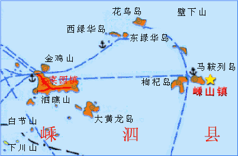

浙江省无线电运动协会计划在7月25日到7月31日组织业余电台远征队前往舟山群岛嵊泗县嵊山镇所属的海礁岛设立海岛特设业余电台BI5H，参加英国无线电协会主办的IOTA竞赛，并参与日本《CQ Ham Radio》杂志主办的环亚V/UHF传播测试活动。
IOTA（Islands On The Air）是英国的大不列颠无线电协会RSGB（Radio Society of Great Britain）管理的一种业余无线电活动，它按照经确认的通信量而发行多种岛屿通信奖状。它的字面意思就是让海岛在空中出现，也就是指到海岛上去架设业余电台，与全世界进行通讯联络活动。对于整天在混凝土森林里忙碌的业余电台爱好者，既可以到海岛上考验自己的野外操作能力， 又可以到海岛上吸收新鲜空气，同时享受一下海水沙滩阳光大自然，IOTA岛屿通信是一样一举两得的好活动。
IOTA组织把世界上的岛屿划分成许多的“岛屿群”，对曾有业余无线电爱好者在岛上进行过一定数量的业余无线电联络的岛屿进行编号。如轰动一时的黄岩岛(BS7H)的野外通信也使黄岩岛获得AS-116的岛屿通信参考号码。我国拥有漫长海岸线及丰富的海岛资源正适合进行IOTA的活动。
一九九八年，IOTA活动在中华大地上沸腾起来，同时也已开始引起国际业余无线电界的关注，很多国际上著名的火腿对我们的活动给予了鼓励和好评。
1998年4月开始，先后有北京的爱好者去河北省境内的渤海石臼坨（BI3H）， 江苏的爱好者去连云港附近的平岛（BI4Q），北京的爱好者到上海长兴岛（BI4C）、浙江舟山岛（BI5Z），福建的爱好者到福建省平潭岛（BI5P），广西的爱好者到广西涠洲岛（BI7W），给国内外“岛迷”们提供了许多机会。1998年英国无线电协会IOTA委员会授予CRSA 1998年最杰出IOTA DX远征奖，并衷心地祝贺和感谢中国爱好者所做的工作。1999年北京、江苏和广东三地的爱好者联合组队到浙江的洞头岛进行迄今规模最大、影响最大的远征。2001年北京和广东的爱好者甚至前往越南的岛屿进行远征活动。
浙江省是海洋大省，拥有漫长的海岸线和丰富的海洋资源。从1998年至今，在浙江所辖的海岛上已经进行过BI5Z（舟山沈家门）、BI5Y（大洋山）、BI5X（小洋山）和BI5D（洞头）四次大的远征活动。但是令人遗憾的，由于浙江省的业余电台发展水平的限制，所有这些活动，都不是由浙江的业余电台爱好者组织的，甚至浙江的爱好者都无缘参与。
因此2001年浙江省无线电运动协会成立以来，就一直努力克服各种困难，积极创造有利条件，争取在浙江的岛屿上留下我们浙江爱好者自己的名字。
与以往的远征活动不同的是，本次远征的目标在于参加一年一度的IOTA竞赛及环亚V/UHF远距离通讯测试，并力争取得好成绩。
IOTA委员会为了鼓励海岛通讯活动，年年举办IOTA竞赛，是全球业余电台界知名的活动。每当竞赛时，往往有众多的远征队深入一些平时没有电台的海岛设台工作。而全世界众多的业余电台爱好者，也往往会在这个时候守候在海岛通讯频率上，期望获得难得的海岛电台的联络机会。
IOTA竞赛的日期是每年7月的最后一个周六、日，时间从星期六的UTC12：00到星期天的UTC12：00，计24小时。竞赛以联络到的海岛电台的数量和字头记分，获得好的分数进入IOTA竞赛排行榜是全世界业余电台爱好者莫大的荣誉。因此在那24小时之内，全世界业余电台的目光，都会关注在为数不多的海岛电台上，关注在我们海礁岛远征队上。我们将成为全世界业余电台追逐的目标，我们的成就将被永远纪录在IOTA的荣誉榜上。
V/UHF波段，特别地指业余无线电的2米（144-146MHz）和70厘米（430-440MHz）波段，一般地被认为是视距传播，只适合做本地联络之用。但是在诸如大气波导、Es层电离层、流星余迹等现象的作用下，V/UHF波段还是有可能做几百甚至上千公里的远距离通讯的。特别在夏季，上层空气和下层空气的温度差较大，使得空气的密度产生差别，电波在不同密度的空气中传播就会产生折射，若上层空气冷，下层空气热（通常情况），电波就会弯向上，反之，点播就往下弯，这是就发生超视距的传播情况。上下层是冷空气，中间夹着一层热空气，电波就会在上下两层来回反射传播形成所谓“波导传播”，电波可以极小衰减地传播到几千公里！因此夏季是试验V/UHF远距离传播的最好时机。
日本的《CQ Ham Radio》杂志是日本业余无线电联盟JARL(Japan Amateur Radio League)的机关刊物，在日本和世界各地有几十万读者。每年7月的最后一个周末，该杂志都会主办环东亚的2米及70厘米波段远距离通讯试验活动。活动会吸引日本各地众多的爱好者参加，也每年都邀请韩国、俄罗斯远东地区和我国台湾地区的爱好者参加，一起来试验V/UHF波段的远距离传播。试验的结果，在《CQ Ham Radio》上公布，而杂志社每年都会选取有特色的队伍，进行详细的报道。
中国大陆的爱好者从去年开始参与这项活动，还没有取得好的成绩。这次我们以海岛远征队身份参加这次活动，将会是环亚V/UHF试验活动的亮点，会引起杂志社莫大的兴趣，而予以充分报道。
我们计划前往的嵊山镇位于浙江省的东北部，嵊泗县的最东端，全国著名的舟山渔场中心，位于北纬30°43'，东径122°49'，居长江和钱塘江入海口交汇处，是全国1.8万公里海岸线的中心点，是国家一  级渔港和二类开放口岸。嵊山镇由大小51个岛屿组成，海岸线总长19.3公里，嵊山镇南面深水线3.7公里，水深10-15米。为马鞍列岛最大锚泊地，可避西－东北风8－10级，附近海域有国际航道２条，县境水道19条。全镇陆地总面积为7.79平方公里，海域面积2900平方公里。常年流动人口1600余人。
嵊山镇属典型的北亚热带海洋季风区，历年平均气温15-17°C,极端高温36.70°C,极端低温为零下7°C。年日照时数1940.6h,年平均相对湿度81%,年降水量1072.5mm,年平均风速7.2m/s，东北东风系常年导向风。区域海区为浅海正规半日潮，全年潮位以八、九月份最高，二、三月份最低，潮差１米以上，平均高潮位1.41米，多年平均低潮位-1.15米，潮流流速为1-4节，波浪0.8-1.2米，台风过境波高近7米,海水温度平均16°C左右，盐度为29.37‰，海水透明度3米以上。
嵊山镇是典型的海岛渔区，全省著名的渔港重镇，经济区位优越，海洋资源丰富。嵊山渔场是全国最大渔场之一，有天然鱼库之称。岛上有集体和私营水产品加工企业135家，有水产冷库20座，全镇共有530家个体工商户，14家旅社,21家美容美发，40家饮食业。全镇的基础设施不断完善,五十年一遇3.8公里标准海塘贯穿南北岙口;岛上建有大小水库8处,蓄水量20多万立方米,日供水500吨的自来水厂一座，于97年投资610万元建有全国首家500吨级海水淡化站。
嵊山镇邮电、通讯事业蓬勃发展，电力保障，设施完善；海上交通日益发达，与全国沿海各地区均有货运航线，开通了县城与嵊山的高速豪华客轮嵊翔２号，嵊山与沈家门的隔日班奇观轮。拥有水产、石油、客运等专用码头13座，岛上文化、教育、卫生、体育、广播等机构齐全，设施完善。
我们计划设台的海礁岛是嵊山镇的一个无人岛，是我国大陆最东面的岛屿。根据我国政府关于中华人民共和国领海基线的声明，舟山海域内领海基点共有三个，分别是嵊泗县的海礁（泰簿礁）、东南礁和普陀区的两兄弟屿。海礁岛位于北纬30°44.1′，东经123°09.4′。隶属于嵊泗县的嵊山镇，位于海礁岛群的东南部，西距嵊泗县城约68公里。
我们将向中国无线电运动协会申请BI5H的电台呼号。BI是中国海岛活动的前缀，5是浙江所在的业余第5区，H是海礁岛的拼音字头。
远征和竞赛都是对爱好者综合素质的全面考验，也最能反映操作者各方面的能力。这次，远征队将试图把远征和竞赛结合到一起，给自己创造更强有力的挑战。
我们也清醒地看到，我们的活动与国际先进水平相比还有很大的差距。我们的操作和组织水平还有待进一步提高，我们的活动还存在操作时间短，联络电台数量少的问题；通信设备的数量和质量以及远征活动的后勤组织工作也还需要提高和改善。在我们的心里都亟盼着使我们的远征活动尽快达到国际水平，为此我们必须团结各方面的力量、多作尝试，广积经验。
鉴于远征的参加者分布在全省各地，各项筹备工作只能在各地分散进行，而每个火腿平时都有自己的本职工作，不可能为此投入过多的精力，况且一旦上岛就必须立即投入实战，根本没有时间再临阵研究行动方案。不少远征队员互相又从未见过面，更谈不上有互相配合的经验，因此，这次活动的成败在极大程度上依赖于精密的事先策划。如果筹备工作在任何细节上出现疏漏，都可能造成现场的困难和混乱。
我们需要事先根据活动期间电离层的情况和电波传播的发展趋势，经详细分析后规划、绘制的频率分配表和使用时间表。为了使每一位远征队员在活动中不会因为忘记或缺少什么信息而影响协同作战， 我们将最后定稿的活动计划和重要信息编成一本《BI5H远征队员手册》。人手一本，无论是频率时间安排、分组分工、设备配置、卡片管理、传播预测还是远征队守则、生活管理，凡是需要明确的事项，无不清楚地列于其中，随时可以查考。这种以实用的书面材料来减少会议时间的做法将十分有效。
我们也会及时地通过INTERNET向世界著名的DX传媒宣传BI5H的活动消息，免得各国的HAM错过和我们联络的机会。为了使那些还不能熟练地在电台堆积如山的DX远征频点上抢夺联络机会的国内DX新手，也有机会和BI5H联络上，我们会专门通告对他们比较有利的时间和频率，并提示了操作要点。
由于这次去的海礁岛是无人岛，虽然岛上面积不是很小，不至于象黄岩岛那样无法立足，但是恐怕也是无法在岛上居住。如果住在镇政府，用船来回接送，也容易产生各种问题。特别是万一有情况时，岛上人员的安全得不到保障。所以我们计划是在船上住，工作时才轮流上岛。这样一来，在活动期间租船的费用，和船上的生活费用，会是整个活动最大的支出。我们计划在5月上旬，派两到三名同志，先去当地了解情况，利用我们各自的工作关系，与当地的水文、渔业等部门人士接触，并设法预约渔船。由于7月末已进入伏季休渔期，希望到时候渔船比较容易能租到。
为了确保大队人马能在到达海礁岛后立即投入工作，我们要成立一支先遣队，在活动前两天进入海礁岛现场。他们的任务是：提前选择三个台址和安排好大部队的食、宿、行等后勤工作，使大家一上岛就能马上全身心地投入工作。
我们的通信目标是达到2万台次通联，这将意味着我们与两万个业余电台做了联络，并将寄出两万张联络确认卡片。
鉴于过去一些活动曾不同程度地受到诸如架台地点、电源等的困扰，有时严重影响了工作的正常进行，所以如何保证电台工作条件成了队员们最关心的问题。我们计划在岛上分两处设立两个工作地方，分别在HF和V/UHF工作。
一号台在HF波段工作，发射功率500W，使用三单元三波段八木定向天线在白天工作在14、21和28MHz波段；使用倒V天线在夜晚工作在3.5和7MHz波段。一号台主要是做IOTA竞赛通讯。
二号台主要在V/UHF工作，使用全模式收发信机，在50MHz波段输出100W，在144MHz波段配合功放输出200W，在430MHz波段输出50W。在50MHz波段使用5单元八木天线，在144MHz和430MHz波段分别使用两车15单元八木天线。同时二号台也设置一根1/2直立多波段HF天线，可以工作在14、21、28MHz波段。
两个台分别使用两部1kW的柴油发电机提供电力供应。两个台址要相距一定距离以防相互干扰
每个台址一部电台，一或多副八木天线，一副垂直天线或倒V天线，一台功率放大器和一台笔记本电脑。主要器材包括：
收发信机： FT847, IC706MKII。 天线： ED4S(一副), R6000(一副)，40m/75m倒V, A503HB, 15ELE 2m和70cm。 放大器：GO-2KW一台(500瓦)。 柴油发电机：1kW 野营桌椅和帐篷 台灯器材由参加活动的爱好者分别筹措。
在岛上设立临时的70厘米通讯网，设置的频率要避开UHF试验的频率。该网将提供两个台之间、海礁岛与渔船之间、与大岛之间的通讯联络。
两个台址的通信操作和人力配置由有关负责人员按照力争最佳总体联络成绩和加强各地队员之间相互交流的原则统一协调，用70厘米通讯网进行调度。
电台日记用笔记本电脑通过CT9.37软件实时录入，这样就可以直接将数据实时发上Internet。
活动前会先查看传播预报然后再决定对哪个地区，如欧洲、北美，日本、大洋洲、南美等进行操作，事先准备好一些简明的关于传播情况的资料。
大陆最东面的岛屿、海岸线中心点、无人荒岛、IOTA竞赛、V/UHF试验，所有这些因素综合在一起，将会使得我们的这次远征，成为全世界业余电台爱好者追逐的目标，也会成为媒体关注的焦点。
整个远征活动将会建立一个永久性的互联网网站www.bi5h.org.cn，来向全世界介绍我们的活动计划、进展和结果。我们会向IOTA委员会通报我们的计划，并通过IOTA的网络新闻发布向全球IOTA爱好者公布。我们会在全球各个著名的远征公告栏上公布我们的计划。我们会向日本《CQ Ham Radio》杂志注册我们的V/UHF试验队，并在该杂志上公布我们的地点、呼号和频率。所有这些，都是为了在出发前使尽可能多的业余电台掌握我们的动态，在出发前就使全球爱好者屏息以待，一旦开台就能立刻获得热烈的响应和回答，形成pile up（众人围住期待联络的场景）。
杭州的《都市快报》记者徐璞，将会和我们一同前往，用相机纪录下荒岛业余电台的精彩场面。摄影新闻不仅在《都市快报》发表，也将发表在其他国内摄影杂志上。
浙江电视台周六的“信天游”栏目，一向对户外活动十分关注。每个周六都制作一期介绍某地野外活动的专辑。通过杭州的“快步天下”俱乐部，我们和“信天游”栏目保持着密切的联系。他们已经专辑介绍过“快步天下”组织的活动。我们这次荒岛野外探险活动，他们有非常大的兴趣。也表示会一起前往海礁岛，制作专辑播出。
从岛上回来以后，我们将主动按照联络日记，向联络过的电台寄发联络确认卡片。印刷精美的卡片，带着海礁岛美丽的风光和赞助商的介绍，飞向世界的各个角落。
我们将会把我们在V/UHF的试验成绩，报告给日本《CQ Ham Radio》杂志，并主动提供充分的宣传材料和日文稿件在该杂志上刊出。
最后，我们会组织有关的英文文字稿件，向美国、日本、澳洲和欧洲的业余电台专业杂志投稿，充分介绍中国爱好者在这次全球注目的活动中的表现。来自中国的稿件一向是他们感兴趣的话题，我们的活动在事后还可以得到一次宣传的pile up。